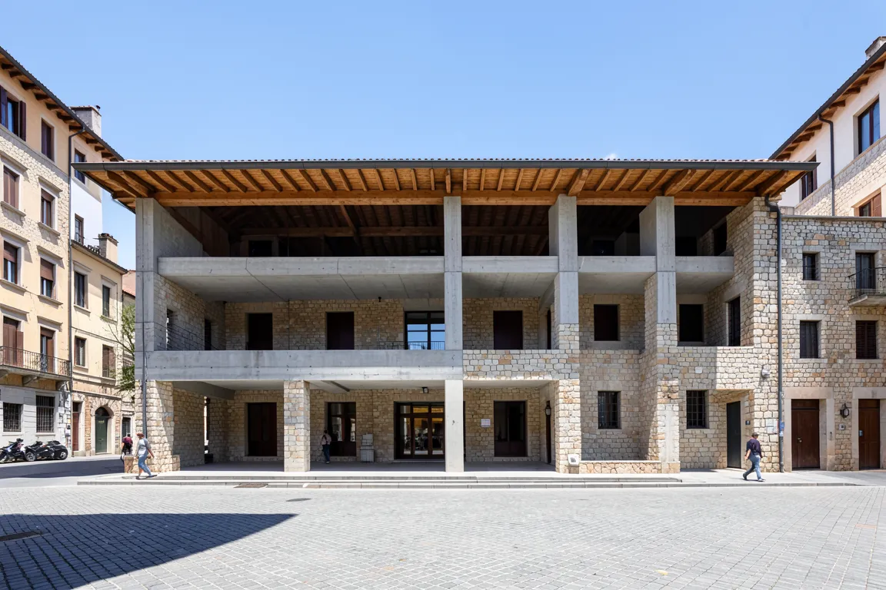

архитектура · 1981–present · также: Регионалистский модернизм, Модернизм места
Современная форма, укоренённая в месте. Утцон, Монео, Бава, Пиано и Цумтор сохраняют строгость модернизма, но берут свет, климат, материалы и ремесло с участка и отвергают и универсальную коробку, и историческую шутку.

Главная идея
Здание должно отвечать конкретному месту современными средствами: климат, материалы и ремесло дают форму, а универсальный стиль и ностальгия отвергаются.
Принципы дизайна
Сначала читайте участок: задавайте ориентацию, проёмы и крышу по солнцу, ветру и дождю этого места.
Берите материалы в радиусе 100–300 км и позволяйте их фактуре и стыкам быть увиденными и ощутимыми на ощупь.
Стройте тектонический порядок: выражайте стык, пролёт и нагрузку в деталях 20–60 мм.